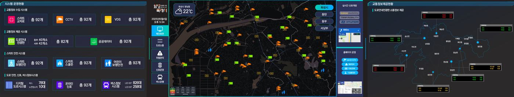
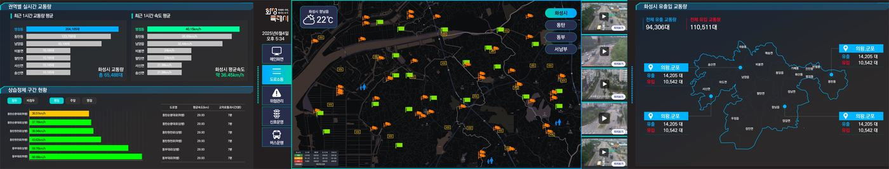
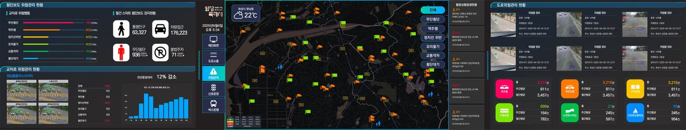
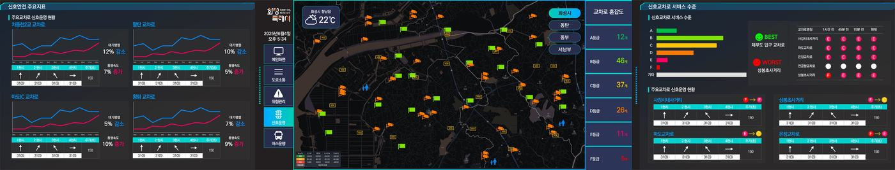
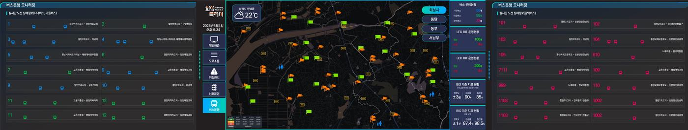

GIS 기반 지도
지자체 전역의 교통시설물을 지도 위에 표현하고, 버튼을 누르면 해당 지역 중심으로 이동합니다.
흩어져 있던 교통·안전·신호·버스 데이터를 하나의 상황판으로 모읍니다. 관제 요원이 화면을 옮겨 다니지 않아도, 지금 도시에서 무슨 일이 벌어지는지 보입니다.
스마트교차로 · CCTV · VDS부터 전광판 · 버스까지, 운영 중인 모든 장비를 종류별로 집계합니다.
지자체 전역의 교통시설물을 지도 위에. 옆의 버튼으로 시나리오를 즉시 전환합니다.
실시간 신호개방, 협력 데이터 연계, 홈페이지 운영 상태를 상시 표출합니다.
도로안내 전광판이 지금 무엇을 표출하고 있는지, 도로별 소통 상태와 함께 확인합니다.
목적에 맞는 시나리오를 골라 상황판을 전환합니다. 스크롤해 보세요.





교통·안전·신호·버스정보 4개 시나리오의 주요 지표를 한 화면으로 모읍니다.
실시간 교통량과 속도를 분석해 정체를 미리 읽어냅니다.
도로 위 위험을 히트맵으로 모아 사고가 나기 전에 보이게 합니다.
교차로 서비스 수준을 등급으로 보고, 개선 효과를 숫자로 확인합니다.
시내·마을·광역 버스의 실시간 위치와 안내기 운영상태를 함께 봅니다.
지자체 전역의 교통시설물을 지도 위에 표현하고, 버튼을 누르면 해당 지역 중심으로 이동합니다.
화면 오른쪽에 요약 지표를 상시 표출합니다. 시나리오에 따라 강조 항목이 바뀝니다.
한 번의 클릭으로 통합운영 · 소통 · 안전 · 신호 · 버스정보 화면을 오갑니다.
운영·유지보수 관점에서 시스템별 장애를 한눈에 관제합니다. 스마트교차로 · CCTV · VDS · VMS 등 장비별 장애현황을 GIS 위에 표시해 위치까지 바로 파악할 수 있습니다.
화면 이미지는 화성특례시 ITS 상황판 구축 사례입니다.